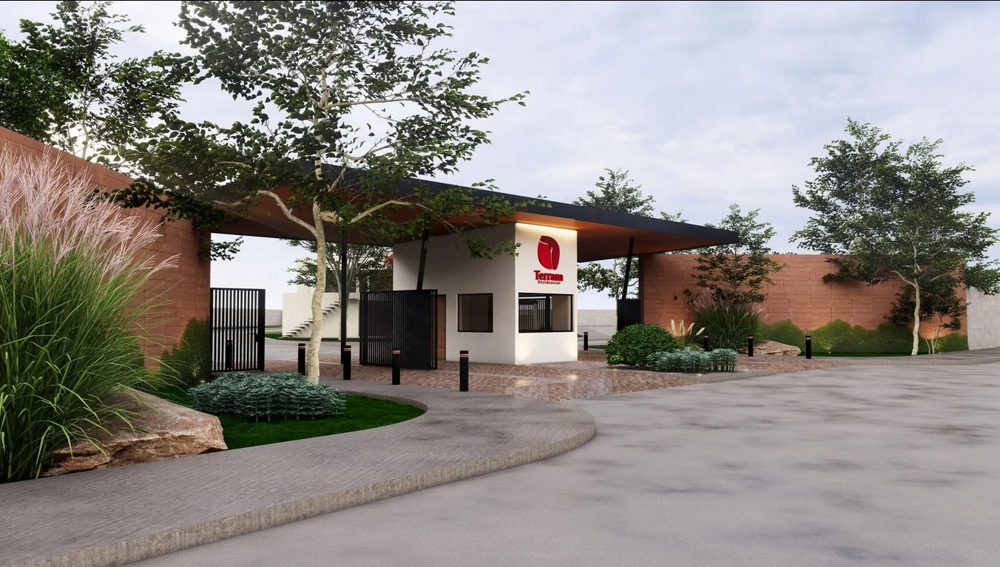

En ventaTerram Residencial
📍 Villa de Pozos · Casas en privadaResidencial de 4 privadas con seguridad y amenidades (área infantil, pista de caminata y salón de usos múltiples), a un costado de Residencial La Cantera. Casas de dos niveles y 3 recámaras en terrenos de 120 m² — modelos Beirut, Marsella, Estambul y Trípoli desde $2,149,000 — y lotes residenciales para construir a tu gusto.
Conocer el desarrollo Información · WhatsApp